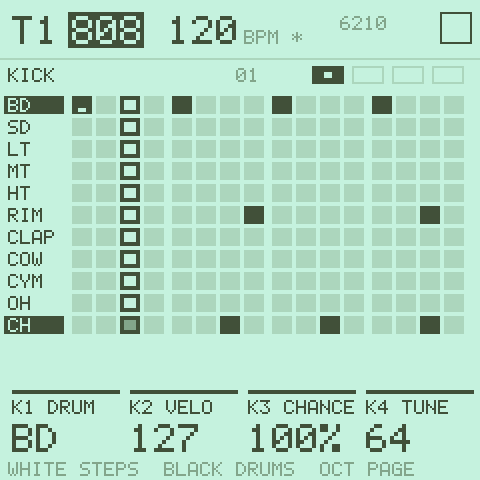
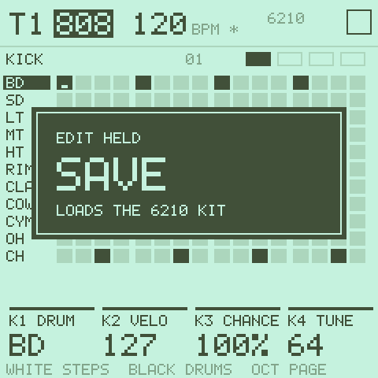
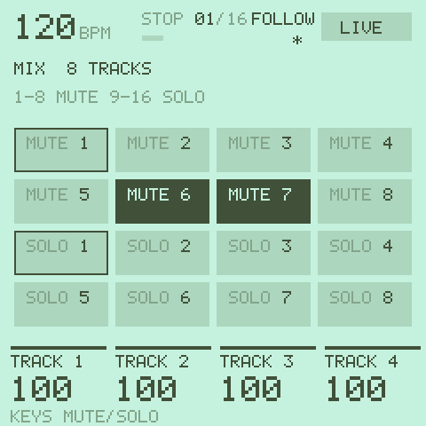

Manual
6210 Drum Peter 0.1 BETA for the M-VAVE FM-1. Built on FM1 Open V14.
1. First start
After installing, the FM-1 shows the 6210 start screen for about a second and then opens the DRUM page. Any key or knob skips the start screen.
If the project in memory is empty (no notes on any track), 6210 turns it into the 6210 kit and shows 6210 KIT READY: an 808 groove on track 1, a 909-style groove on track 2 and an acid line on track 3. Press PLAY to hear it. A project that already has notes is never changed.
The kit is not written to memory until you save it with SAVE. Until then the SAVE light blinks once a second.
2. The panel
| Control | On the DRUM page | Elsewhere |
|---|---|---|
| SELECT | Track 1–8 | Track, or the page's own list |
| ALGORITHM | Track length 16 / 32 / 48 / 64 | Sub-page on the step editor |
| PRESETS | Kit or program of the track | Step cursor, project slot |
| K1 | Drum (drum tracks) or note (melodic) | Page parameters |
| K2 | Velocity of the edited step | Page parameters |
| K3 | Chance of the edited step | Page parameters |
| K4 | Tune of the drum, 303 cutoff, or DX7 volume | Page parameters |
| White keys | The 16 steps of the selected drum | Notes, mute/solo, slots |
| Black keys | Pick and play a drum (or play notes) | Notes, editor shortcuts |
| OCT − OCT + | Previous / next 16 steps | Octave of the keyboard |
| SEQ | Opens the full step editor | Back to DRUM |
| HOME | Project and preset browser | Back to DRUM |
| EDIT | Tap: sound editor. Hold: kit menu | Sound editor |
| ENV LFO SCL | Envelope, LFO and advanced sound pages | |
| FX | Reverb and delay sends, effect settings, tempo and delay sync | |
| GLO | Tap: mixer. Hold: mixer while held | |
| ARP | Tap: roll / arpeggiator on or off. Hold: its settings | |
| SAVE | Save the project | |
| PLAY REC | Start / stop, record | |
3. The DRUM page

- Header: track number, the engine of the track (808, SMP, 303, DX7, PSG, PLK; grey when the track is muted), tempo, a
*when there are unsaved edits, and a square that fills on every beat. - Title line: the full name of the selected drum, the number of the edited step, and four boxes for the four 16-step pages. The filled box is the page you see, the dot shows the page that is playing, outlined boxes are past the track's length.
- Grid: one row per drum (11 on the 808 engine, 8 on the sampler). Dark cells play. The selected drum's label is inverted; any label flashes when its drum plays. The small bar marks the step you edited last.
- Knobs: the four values K1–K4 control. The bottom line shows hints and messages.
4. Writing steps
Pick a drum
Press a black key. The first black key is the kick (BD), then snare, low, mid and high tom, rim, clap, cowbell, cymbal, open hat and closed hat. You hear the drum and it becomes the selected row. K1 does the same without playing it.
Set and clear steps
Press a white key: key 1 is step 1 of the page, key 16 is step 16. Press it again to clear the step. The key lights up while the step is set, so the keyboard always shows the selected drum's pattern.
Velocity and accent
The step you pressed last is the edited step (its key blinks twice a second while stopped). K2 sets its velocity, 0–127. From 120 up it counts as an accent. Velocity belongs to the whole step, so all drums on that step share it.
Chance
K3 sets how often the edited step plays: 100% always, down to 12% in eighths. Turn right for more often.
Tune
K4 tunes the selected drum. For every other drum setting (decay, tone, snappy, drive, pan…) tap EDIT; see Sound editing.
5. 303 and melodic tracks

On a 303, DX7, PSG or pluck track the grid has one row, NOTE. White keys set and clear steps with the last note you played. Black keys play notes; OCT pages steps here too, so use the step editor (SEQ) to change octaves and chords.
K1 changes the pitch of the edited step (or of the next one you set), K2 velocity (accent on the 303 from 120), K3 chance and K4 the 303 cutoff (DX7: track volume). Resonance, envelope, decay, slide and drive are in the 303 sound editor (EDIT).
6. The 6210 kit
Hold EDIT on the DRUM page. A box opens:

- EDIT + SAVE: load the 6210 kit. Tracks 1–3 are cleared and set up again: T1 DRUM 808, T2 DRUM 808 with 909-style settings, T3 BASS 303, each with a 16-step starter pattern. Tracks 4–8 are not touched. HOME + SAVE undoes it.
- EDIT + PRESETS: choose another engine for the track (DX7, 303, 808, PSG, pluck, sampler). Confirm with SAVE.
- Release EDIT without doing anything: the sound editor opens, as on the original firmware.
7. Length and pages
Turn ALGORITHM to set the track's length to 16, 32, 48 or 64 steps. While playing, a new length starts at the track's next loop. Each track has its own length, so a 48-step hat line can run against a 64-step kick.
OCT − and OCT + show the previous or next 16 steps; their lights show which way there are more. While playing, the page follows the playhead until you change page; going back to the playing page follows it again.
8. Play, record and tempo
- PLAY starts and stops. HOME + PLAY stops everything and silences all notes.
- REC: while stopped, step recording (play notes, releasing all keys moves to the next step); while playing, live recording. REC again ends it. During recording the keys play notes instead of setting steps.
- Tempo: hold HOME and tap SEQ in time. Or set it with K4 on the step editor's first page, or on the FX tempo page. 30–300 BPM.
- Swing, click and count-in: step editor (SEQ), turn ALGORITHM to page 3/8 RHYTHM/REC.
- MIDI clock: step editor page 5/8 SYNC / LOOP.
9. Roll
On a drum track the arpeggiator is a drum repeat. Tap ARP to switch it on (ARP ON), then hold a black key: the drum rolls at the set rate. Hold ARP for its page: RATE and DIRECTION, then (turn ALGORITHM) SWING and HOLD. While roll is on the ARP light blinks every sixteenth.
10. Mixer

Tap GLO to open it, tap again to go back. Or hold GLO to use it only while held.
- White keys 1–8 mute tracks 1–8; keys 9–16 solo them.
- K1–K4 set the volume of four tracks; SELECT moves between tracks 1–4 and 5–8.
- Lights: a playing track's key is lit, a muted track's key double flashes, a solo key blinks fast. Outside the mixer, GLO double flashes every bar while anything is muted or soloed.
11. Sound editing
Tap EDIT for the sound editor of the track. On a drum track it opens on the selected drum; K1–K4 change its first four parameters, and pressing a drum's key switches to that drum. Press SCL (or hold EDIT from another page) for the advanced editor with every parameter; there SELECT turns the pages of four. ENV and LFO open the envelope and LFO pages. FX holds the reverb and delay sends of the track and the effect settings. Every sound edit can be undone with HOME + SAVE.
12. Saving and projects
- SAVE opens the save page. Pick a slot with SELECT or PRESETS and confirm on screen. When the project is saved the SAVE light stops blinking.
- HOME on the DRUM page opens the browser: white keys load slots 1–16, PLAY loads and starts.
- HOME + SAVE: undo / redo the last edit.
- Copy, paste, clear and repeat: SEQ + EDIT opens the actions menu.
13. Shortcuts
| Hold | Press or turn | Does |
|---|---|---|
| EDIT (DRUM page) | SAVE | Load the 6210 kit |
| EDIT (DRUM page) | PRESETS | Change the track's engine |
| HOME | SEQ in time | Tap tempo |
| HOME | SAVE | Undo / redo |
| HOME | PLAY | Stop everything |
| HOME | PRESETS | Change the track's engine |
| SEQ | EDIT | Actions: copy, paste, clear, repeat |
| GLO | keys, knobs | Mixer while held |
| ARP (hold) | — | Roll / arpeggiator settings |
14. Blink codes
The panel lights are on or off; there is no dimming. So each state has a rhythm.
| Light | Rhythm | Means |
|---|---|---|
| White key | Steady | The selected drum plays on this step |
| White key | Running light | Playhead: an empty step lights for half a sixteenth, a set step blinks off for a moment |
| White key | 2 Hz, while stopped | The edited step |
| Black key | Steady | The selected drum (goes off for a moment when it plays) |
| Black key | Short flash | That drum just played |
| PLAY | First third of every beat, two thirds on beat 1 | Playing; shows the bar. Slow blink: paused |
| REC | 8 Hz | Recording |
| SAVE | 1 Hz | Unsaved edits |
| GLO | Double flash each bar (every 2 s when stopped) | Something is muted or soloed |
| ARP | Every sixteenth (steady when stopped) | Roll / arpeggiator on |
| EDIT | 2 Hz | EDIT is held on the DRUM page |
| OCT − / + | Steady | More steps that way |
| SEQ FX ENV LFO HOME | Steady | That page is open |
15. Troubleshooting
The keys play notes instead of setting steps
You are recording (REC blinks), the mixer is open, or you are not on the DRUM page. Press REC to stop recording, or HOME to go back to DRUM.
Black keys do nothing on a track
On drum tracks only the first 11 (808) or 8 (sampler) black keys have drums. On melodic tracks they play notes of the current octave.
The kit did not load at start
It only loads on an empty project. Hold EDIT and press SAVE to load it any time.
Hanging notes
HOME + PLAY stops and silences everything.
Back to the original firmware
Open the installer and choose Restore original V15. Export your projects and samples first: 6210 projects do not open on stock firmware.